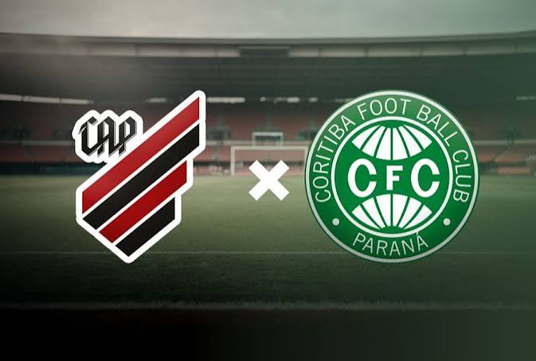

Será que é verdade?

É verdade!!!
Será que é verdade?
É verdade!!!

Qual será maior?
.jpeg)
O Athletico Paranaense é considerado o maior clube devido às suas conquistas internacionais, Copa do Brasil e estabilidade na elite, enquanto o Coritiba possui a maior torcida e é o maior vencedor estadual.
.jpeg)
Qual é a melhor torcida do Brasil?
.jpeg)
O Corinthians é amplamente reconhecido pelo apelido histórico de "A Fiel" e por ser considerado uma das torcidas mais fanáticas e fiéis, especialmente em momentos de adversidade.

Qual foi o primeiro campeão brasileiro?

Em 1937, o Atlético Mineiro conquistou o Torneio dos Campeões e se tornou o primeiro campeão brasileiro da história. Um título oficial reconhecido pela CBF.

Qual é o clube com maior número de títulos estaduais em São Paulo?

O Corinthians é o maior campeão paulista, com 31 títulos.

Foi o Flamengo o primeiro clube fundado no Brasil?

O São Paulo Athletic Club foi criado por imigrantes ingleses e inicialmente focava no críquete. Mais tarde, com Charles Miller, passou a praticar o futebol e venceu o primeiro Campeonato Paulista oficial em 1902.